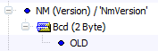

Compare View
Compare View
[CMP-R001] You open the dialog opened with...
[CMP-R200]
[CMP-R005]

Example:
Note: this does not apply to referenced Diagnostic Instances (these are not directed references S => T).
[CMP-R007] - for directed references S => T in the data model, - if there are differences in T, - Compare View allows to navigate to the differences of T * context menu “Go to difference details”). - Note: not for NRCs.
[CMP-R010]: Compare View supports filters via toolbar buttons: show/hide differences of type…
[CMP-R012]: Compare View support additional filters via Ribbon menu items:
[CMP-R016]: button "Reset filter (show all)" resets all filters.
[CMP-R018]: for an inner node in the difference tree,
[CMP-R015] The property filters hide a difference if all child differences are filtered out (CDS-72026 v13), even if a child difference is in a referenced object.
| Object | Reference Target with Property Difference | Attributes | Description | OID/TemplateOID | TextID |
|---|---|---|---|---|---|
| DID | DataType | x | x | x | x |
| DiagInstance | DataType | x | x | x | x |
| DiagInstance | DID | x | x | x | x |
| DiagInstance -> DID | DataType | x | x | x | x |
| DiagInstance (FaultMemory) | DTC | x | n/a | x | x |
[CMP-R020]: Compare View supports
[CMP-R030]: Compare View shows a details window for extra information about the selected tree node (on bottom of comparison view / details pane at the right which shows multi-line text also).
[CMP-R035]: in the tree, Compare View show differences in other languages than the one currently shown, and lists the languages in which there are differences (terms as in File|Properties) (may also be filtered).
[CMP-R050]: if the dialog has been opened in a context where data transfer is possible (cf. [CMP-R001] above), Compare View provides a toggle "Switch to Transfer Mode".
a) If the button is on,
b) If off, Compare View hides the checkbox, hides the panel, and restores standard tree display (fonts, colors etc.)
c) Data transfer is not possible: in View/ViewX edition, in pre document update (cf. [CMP-R140]).
d) If transfer mode was enabled the last time the dialog was opened in a context where data transfer is possible (even across CANdelaStudio sessions), switch to transfer mode on dialog entry. Default: disabled.
[CMP-R055]: After “Transfer”, Compare View restores tree expansion state and currently selected element. If the previously selected element does no more exist in the difference tree, it selects the lowest still existing ancestor element.
[CMP-R070]: Compare View mentions the CDD (with revision), CDDT (with revision) and object (path) used by each document in the difference view.
[CMP-R080]: Compare View explains what the colors used in the difference view mean (e.g. using a legend, or by showing the colors on a filter button).
[CMP-R090]: On data object difference nodes which reference different data types (different qualifiers, or same qualifier with different properties), Compare View opens a modal difference dialog with input objects being the referenced data types (see R150), with data transfer (cf. D001) not possible.
[CMP-R100]: Compare View provides a way to navigate in the document(s) compared: navigate to left object, navigate to right object. Bring the document to the front of the MDI stack. Keep difference view open.
Note: this fits both for comparison of objects within one document and for comparison of two documents. For the latter case, if the user already views the documents side by side, a combined action “navigate to both objects” would be an optimization (not in 7.0).
[CMP-R110]: Compare View shows the difference objects in the order shown in the document navigator tree (e.g. show variants before datatypes).
[CMP-R120]*: if dialog has been opened for two documents, and it contains differences of the respective template objects, Compare View...
a) provides a way to show the Template Associator dialog of CDS-11261;
b) after you close the associator dialog, it re-computes the diff based on the associations, and restore tree state as in [CMP-R055].
c) when you show the associator dialog again from within the same Compare View session, the associator dialog shows the same associations as when the user last time closed the dialog.
[CMP-R140]: Compare View shows a button like “Do Update” (to leave the dialog) when called in context of pre document update.
[CMP-R150]: Compare View provides context menu items for
[CMP-R400-Rq] The compare feature does not cover requirements (see Requirements Data Model R080).
[CMP-R131-DiffExport] Compare View allows to export the computed difference in the formats

Diff Export
[CMP-R131-Filters] Compare View does not apply GUI filters to the diff export.
See also Compare via Command Line.
There are few tags which carry general information about the diff and which exist only once in the exported XML:
<candeladiff> Encloses the whole exported diff.
<sourcefile> Left file of comparison.<targetfile> Right file of comparison.Each difference is represented by one of the following tags:
<modify> Objects exist in source and target, there is a differences between source and target.<add> Object is missing in source, it only exists in target.<delete> Object is missing in target, it only exists in source.Properties
<modify id='_5'>).<modify>:
<qpath> The qpath to the entity in source and target, if the path is the same, else:
<qpathsrc> The qpath to the entity in the source document, if it is different from the target one, and…<qpathtgt> ... vice versa<valuesrc> The value of the different object in source, and<valuetgt> ... in target.<add> and <delete> differences:
<qpath> but only <qpathtgt> or <qpathsrc><valuesrc> and <valuetgt>Example: a DID is missing in target
<delete id='_19'>
<qpathsrc>qpath:/Base_Variant/[DID]DID_0xF414</qpathsrc>
</delete>[CMP-R410-ByteOrder] If the byte-order of a physical value type [BO-R110] is not relevant, Compare View does not show it (CDS-39492, 8.5 SP2).